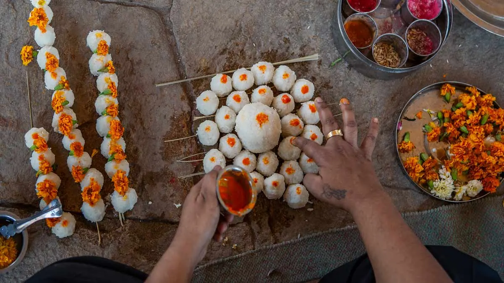
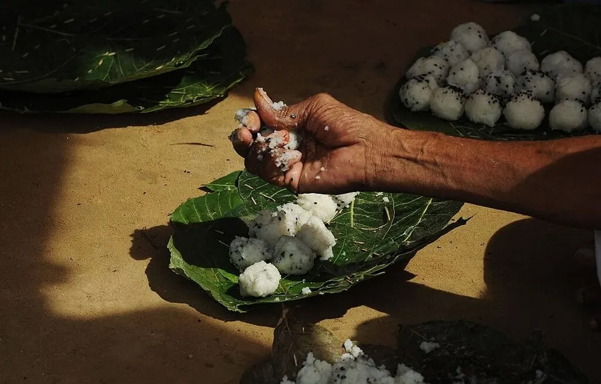

Looking to book Pind Daan in Haridwar? It is a sacred Hindu ritual to pay homage to ancestors and help their souls attain moksha. Our experienced Tirth Purohits guide the complete ceremony as per Vedic traditions at Har Ki Pauri. Living outside Haridwar or abroad? We also perform it on your behalf — see Online Pind Daan Booking.
Pind are rice balls made of rice flour, til (black sesame seeds), barley, and ghee. They symbolize nourishment to ancestral souls and are offered during the ritual.

Haridwar is one of the most sacred tirthas where the holy river Ganga flows. Performing Pind Daan at Har Ki Pauri is believed to guide souls towards salvation. Our purohits ensure all rituals are done with proper samagri and vidhi.
Duration: 30 to 45 mins
Best Time: Early morning (5 AM – 8 AM)
Note: All samagri and arrangements are handled by our purohit.